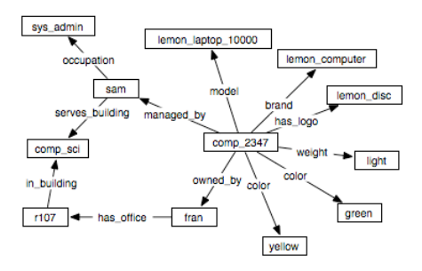
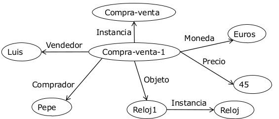
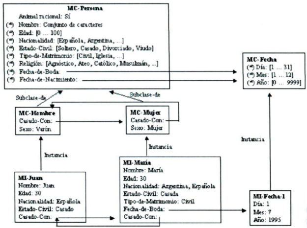
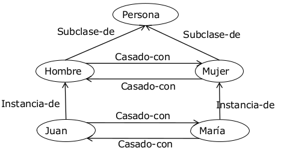

Representación del conocimiento: métodos estructurados
Introducción (PDF)
Los métodos estructurados son una familia de métodos que utilizan grafos para la representación del conocimiento. Se basan en las relaciones entre los elementos de un dominio, y hacen explícita la estructura del dominio.
Son, por tanto, particularmente adecuados para representar conocimiento estructural.
Principalmente, estos métodos son o bien redes semánticas o marcos.
Evolución
Los sistemas de métodos estructurados iniciales tenían una semántica poco precisa. Se va elaborando la herencia como mecanismo de inferencia, y se van desarrollando sistemas con semántica bien definida.
En la actualidad existen formalismos para representar el conocimiento estructural.
Las tendencias actuales en redes semánticas es la web semántica, y en marcos son las ontologías (con clases, subclases, propiedades y restricciones de las mismas).
Redes semánticas

Una red semántica es un formalismo gráfico basado en relaciones binarias. Del lenguaje natural ("Pepe es informático"), pasamos a la lógica de primer orden ("PROFESION(Pepe, Informático)") y por último a la red semántica: .
La red semántica nos permite una representación gráfica del formalismo Objeto-Atributo-Valor. Los nodos representan los conceptos o entidades (objetos, valores) y los arcos expresan la relación binaria (atributos).
Sintaxis
Una red semántica es un grafo formado por nodos etiquetados que representan entidades, conceptos, valores; y por arcos unidireccionales etiquetados que representan las relaciones binarias.
Se puede utilizar cualquier etiqueta para un nodo u arco, existe una falta de estandarización.
Hay dos tipos de arcos. Los descriptivos proporcionan propiedades de las entidades, y los estructurales proporcionan la estructura de la red.
Los estructurales sí tienen cierto grado de estandarización, y su significado es independiente del dominio concreto. Algunos ejemplos son subclase-de para generalización, instancia-de para instanciación o parte-de para agregación.
Para representar predicados no binarios, es necesario reificar el predicado creando una instancia del tipo de predicado correspondiente que esté relacionada con cada uno de sus parámetros. La siguiente imagen muestra la reificación del predicado COMPRAVENTA(Pepe, Luis, Reloj1, 45, Euros).

Inferencia en redes semánticas
Las redes semánticas proporcionan mecanismos de inferencia asociados a los arcos de la red y a procedimientos que los manipulan. Existen dos tipos de inferencias:
- Equiparación: permite resolver preguntas que se representan como una red semántica. Se crea una subred pregunta, con nodos constantes, nodos variables y arcos etiquetados. Se superpone la subred a la original, y si se consigue una superposición perfecta de los nodos constantes y los arcos, se asigna a los nodos variables los valores encontrados en la red.
- Herencia de propiedades: permite que nodos de la red obtengan las propiedades definidas en otros nodos mediante los arcos
instanciaysubclase-de. Para ello se pregunta por un nodo y se busca el arco por el que se pregunte. Si no se encuentra, el motor de inferencia recorre los arcosinstanciaysubclase-de. En cada camino, prevalece el nodo más próximo que tenga la propiedad. La herencia evita repetir propiedades en instancias y subclases, gestiona bien las excepciones herendando el valor de la propiedad más cercano, pero no gestiona las contradicciones que pueden encontrarse por caminos distintos.
Marcos (PDF)
Introducción

Los marcos son estructuras de datos utilizadas para representar elementos bien conocidos (prototípicos). Para adaptarnos a la situación actual, accedemos a la estructura que más se asemeja y modificamos los detalles necesarios.
Como las redes semánticas, hacen explícitas las relaciones de dominio que proporcionan la estructura de la red, pero a diferencia de estas, los nodos tienen estructura y permiten agrupar las propiedades de los elementos del dominio en una unidad denominada marco (frame).
La representación es principalmente declarativa, especificando las propiedades de los conceptos o individuos, pero permiten añadir elementos operacionales a propiedades individuales mediante facetas.
El dominio queda estructurado en jeraquías de herencia.
Para la inferencia se usa la equiparación, la herencia y los métodos operacionales.
En la actualidad, los marcos son el principal formalismo de representación del conocimiento cuando éste se organiza en clases o cuando es conocimiento estructural. La organización en jerarquías de clases y la herencia se mantienen en la mayoría de lenguajes de ontologías.
Elementos de un sistema de marcos
- Marcos: representan clases (hombre, puerta lógica, alarma...) e instancias (Juan, AND-1, alarma incendio 327...).
- Relaciones: representan dependencias entre marcos. Las estándar son:
subclase-de: Relación binaria entre marcos de clase. Es dirigida, de orden parcial (reflexiva, antisimétrica y transitiva). La inversa de la relación es la superclase. Con esta relación se crea una jerarquía de clases desde las más generales a las más específicas.instancia-de: Relación dirigida entre marcos de instancia y de clase. La relación inversa es la representación. También establece jerarquías.- Otras relaciones no estándar: Pueden existir relaciones binarias y dirigidas dependientes del dominio (
hermano-de,casado-con...). Se han de definir primero entre marcos de clase.

- Propiedades: describen los marcos de clase o de instancia. Las propiedades de clase reciben el valor en la clase que las define y son comunes a todas las instancias salvo excepciones. Las propiedades de instancia describen las propiedades específicas de una instancia. Se definen en los marcos de clase pero toman valor en los de instancia, y normalmente el valor es distinto en cada instancia.
- Facetas: descripción adicional de los valores que pueden tomar las propiedades. Algunas características adicionales que pueden dar las facetas es información sobre el tipo de una propiedad, cardinalidad de las relaciones, o demonios (procedimientos que se invocan automáticamente al acceder o alterar el valor de una propiedad).